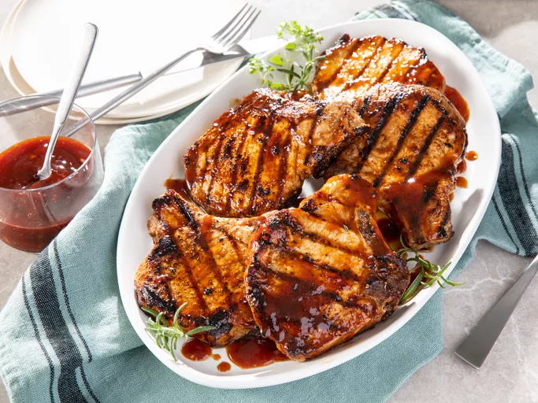

Honey Garlic Pork Chops

A quick and simple grilled pork chop that everyone will love featuring a simple and easy glaze made with ketchup, honey, soy sauce, and garlic.
Ingredients:
- 1/2 Cup ketchup
- 2 2/3 Tablespoons honey
- 2 Tablespoons low-sodium soy sauce
- 2 Cloves garlic, crushed
- 6 Pork chips
Directions:
- Preheat grill for medium heat and lightly oil the grate. Gather ingredients.
- Whisk ketchup, honey, soy sauce, and garlic together in a bowl to make a glaze.
- Sear the pork chops on both sides on the preheated grill. Lightly brush glaze onto each side of the chops as they cook; grill until no longer pink in the center, about 7 to 9 minutes per side. An instant-read thermometer inserted into the center should read 145 degrees F (63 degrees C).
- Serve hot and enjoy!